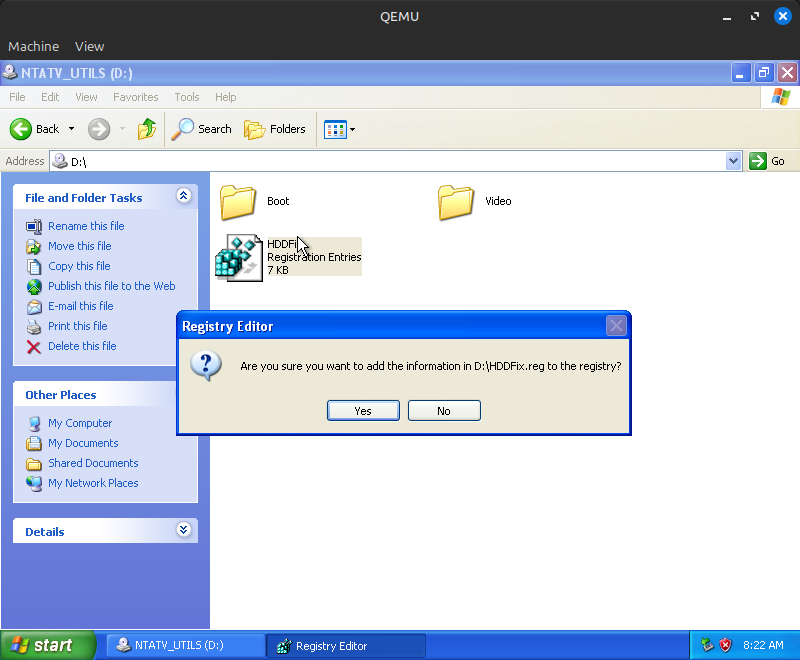
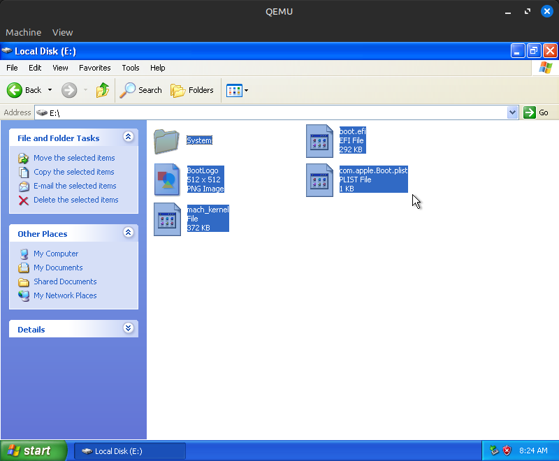
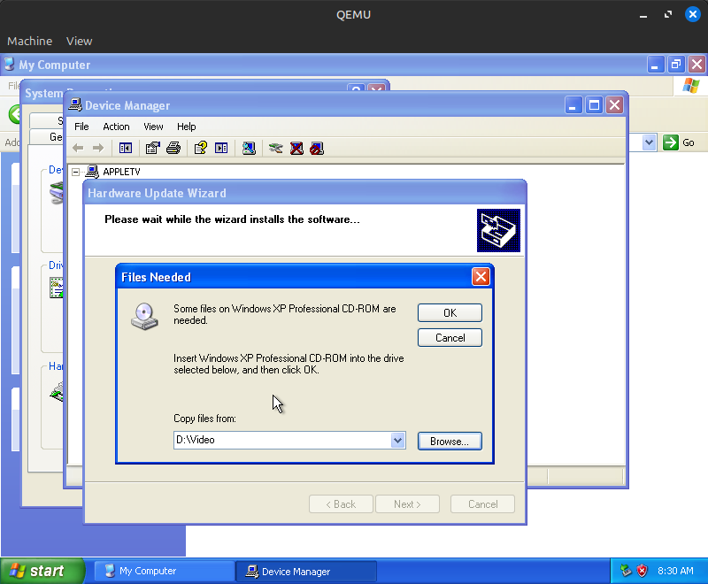
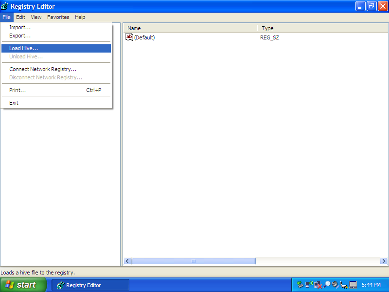
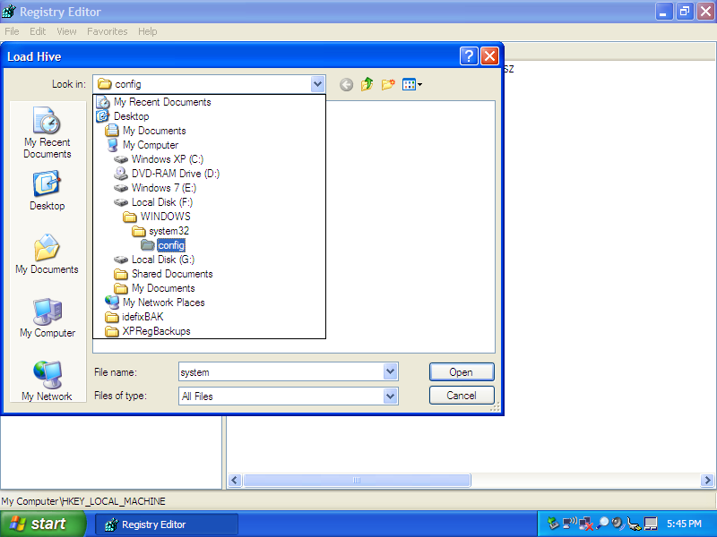
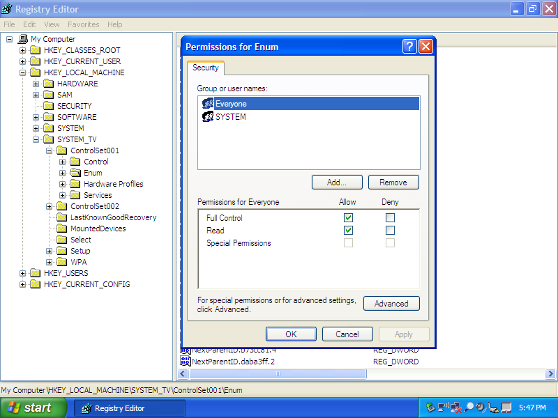
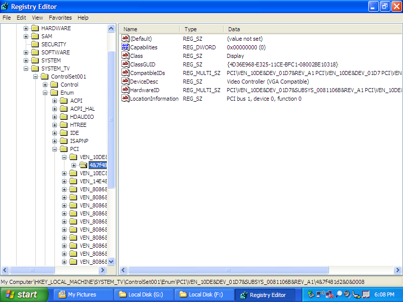
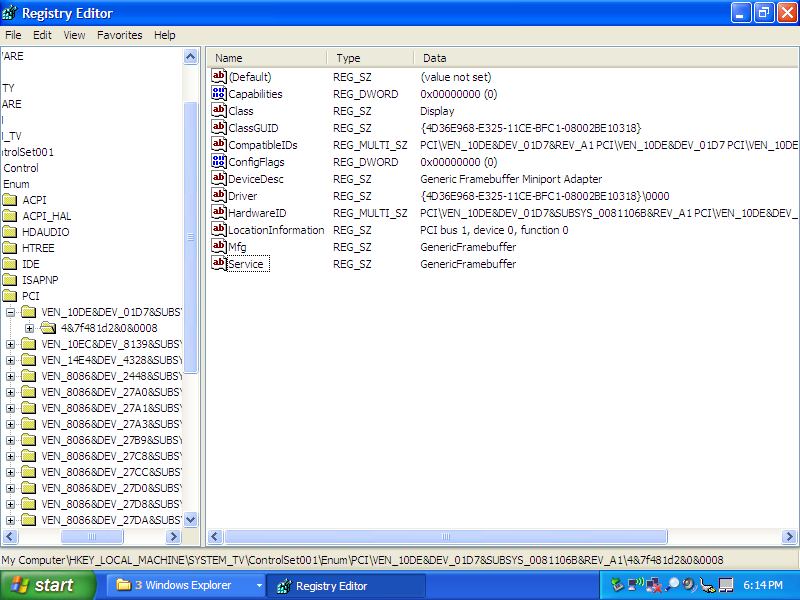

There are currently two ways to install Windows XP on the original Apple TV: the easy way, and the hard way. Both methods require you to remove the hard drive from your Apple TV and use a USB-IDE adapter to access it. Windows does not, and will almost definitely never, be able to boot from a USB drive because I'd need to write a USB stack from scratch.
A premade image can be downloaded from this Archive.org page. Simply download, extract the zip file, and use a tool like GNOME Disks, dd, Rufus, Etcher, or any other disk flashing tool to write the image to the Apple TV's hard drive (or any laptop IDE drive, the TV isn't picky thankfully). You might have to enable writing to large/hard disks for some programs, so be careful to not overwrite the wrong drive. Put the hard drive in the Apple TV, turn it on, and after a few minutes, you should be at an XP desktop! The XP install has all drivers preinstalled and configured, and uses the default Administrator account with no password. However, there are some disadvantages to doing this:
This method of installing Windows is quite a bit more involved than the previous method. You will need the following items:
First, we need a virtual hard disk image. We will restore this to the Apple TV's hard drive once the installation completes, so it must be small enough to fit on there. For Windows XP and 2003, use the following command (for Windows 2000, create a Windows 2000 VM as standard, just ensure you are not using unattended installation):
qemu-img create appletv_windows.img 15G
This will be the amount of space available to Windows. You can resize the OSto fit the full size of the hard drive later. Ensure the size is a few gigabytes smaller than the Apple TV's hard drive, as real-world formatted capacity on hard drives is always smaller than advertised capacity.
Now that your hard drive image is created, it's time to install Windows. For this, use the following QEMU command (Linux):
qemu-system-i386 -enable-kvm -m 2048 -hda appletv_windows.img -cdrom /path/to/windowsxp.iso -boot d -device usb-ehci,id=ehci -device usb-kbd
Technical note: We must add a USB controller with the -device line so that Windows installs the USB drivers correctly. Failure to do so results in an unusable system.
For macOS, replace -enable-kvm with -accel hvf and qemu-system-i386 with qemu-system-x86_64. For Windows, there are a few ways to set hardware accelerated virtualization up. I've never used QEMU on Windows, so you can look it up. Alternatively, you could use VirtualBox for the install, but if you do, you must enable I/O APIC in VirtualBox settings. IF YOU DON'T YOU WILL REGRET IT. DON'T ASK ME HOW I KNOW THIS, AND DON'T ASK ME HOW MANY MONTHS I WASTED ON THIS PROJECT UNTIL I FIGURED THIS OUT.
If you are using Windows 2000, start the VM you created earlier. Counterintuitively, you don't want to enable I/O APIC on this OS because it will cause Windows to infinitely loop during setup (Windows 2000's installer sucks).
Once you get to the partition list, instead of pressing Enter like usual, press C to create a new partition. Make your new partition at least 20MB smaller than the full size of the disk; I usually leave a bit more room than that.

Then, create a partition on the remaining space. In the end, your partition map should look something like this:

Now, install to the larger partition. Format it as NTFS on English editions of Windows 2003 or XP SP3, and FAT32 on all other versions. Go through the installation process as normal. This should only take a few minutes unless your host system is as old as the Apple TV or you type your product key in wrong 37 times.
Once Windows is installed, we need to make sure that it goes to the login screen at startup. This can be achieved by either setting a password for your user in Control Panel or changing the login settings so that Windows asks you what user to log in as every time it boots. This is done to work around a stupid Windows issue where USB devices are not enumerated correctly because Windows is too busy asking for manual intervention ("Found New Hardware" wizard) to enumerate USB devices and let you actually do that intervention. Whatever, this was fixed by the time Windows 8 came out, and is never an issue on the login screen, so, that's what this workaround is for!
Next, navigate to File Explorer and format the extra partition we created as FAT32 (use Quick Format). This will act as the EFI system partition and is where the bootloader will be stored. Once you do that, if you are using QEMU, shut down the system.
Back on the host system's command line, we now need to swap out the CDROM from the Windows ISO to the NTATV Drivers and Utilities ISO. We also need to tell QEMU to boot from the hard drive instead of the CD-ROM. The QEMU parameters should look like this:
qemu-system-i386 -enable-kvm -m 2048 -hda appletv_windows.img -cdrom /path/to/ntatv_drivers_and_utils_X.X.iso -boot c -device usb-ehci,id=ehci -device usb-kbd
If you're installing Windows 2000, just insert ntatv_drivers_and_utils_X.X.iso into the drive in VirtualBox. No need to shut down.
Open the NTATV Utils CD in Explorer and double click on the HDDFix registration entry. When prompted click "Yes" and you should see "Information from HDDFix.reg has been entered into the registry". This allows Windows to boot on hardware other than the hardware it was originally installed on.

Drag the contents of the Boot folder to the FAT32 partition we just created. (Note that in this image, there is a file called mach_kernel; that has since been replaced with freeldr.sys.)

Drag freeldr.ini to the root of the C: drive. For Windows 2000, drag freeldr_Windows2000.ini there and rename it to freeldr.ini. In order to rename it, you will need to unlock the file by unchecking "Read-only" in the properties menu after dragging it to the C: drive.

Now it's time to set up the video driver. Open the Device Manager by typing devmgmt.msc into the Run box, right click on "Video Controller (VGA Compatible)", and select "Update Driver...". Select "No, not this time" when asked about Windows Update, then "Install from a list or specific location (Advanced)", then include the NTATV Utils CD's Video directory in the search.

When asked about driver signing, select "Continue Anyway". When prompted for the Windows CD-ROM click "OK" (do NOT actually insert the Windows CD into the VM!). Go to "Browse..." and go to the NTATV Utils CD's Video folder for the additional file (BOOTVID.DLL). Fun fact: the driver installer in Windows XP will allow you to bypass typical security features in Windows and replace system files on a running system! That's what we're doing here to replace Windows' stock bootvid.dll with this custom EFI-compatible one. Seems like a massive security risk to me!

In Windows XP and 2003, you will get to a screen stating "This device cannot start. (Code 10)." This is to be expected; the driver is looking for an EFI framebuffer, which doesn't exist in this virtual machine. Windows 2000 will not display an error like this for whatever reason. In either case, shut down the VM.
If you are installing Windows 2000, you will need to convert the VDI image from VirtualBox to a raw IMG file. Use the following command for this:
VBoxManage internalcommands converttoraw /path/to/Windows2000.vdi appletv_windows.img
Now, restore the appletv_windows.img to an IDE hard disk using a tool of your choice (dd, GNOME Disks, Rufus, Etcher, etc). Once the restore is complete, mount the Windows ISO you used for the installation on your host machine and navigate to the I386 directory, then extract PCIIDE.SY_ to pciide.sys using either Windows' preinstalled expand command line utility or 7-Zip/p7zip. pciide.sys should be placed in the Apple TV hard drive \WINDOWS\system32\drivers (\WINNT instead of \WINDOWS on 2000); ensure the file name is in all lowercase.
VERY IMPORTANT NOTE FOR WINDOWS 2000 USERS! If you are installing Windows 2000, you will also need to extract HALAACPI.DL_ (NOT HALACPI.DL_, THESE FILES HAVE SIMILAR NAMES BUT THE LATTER WILL RESULT IN AN INFINITE HANG!) to C:\WINNT\system32\hal.dll, replacing the existing file. If you're installing Windows XP/2003, disregard this; the right HAL is already installed.
Now, connect the Apple TV's hard drive to the secondary computer already running XP. It is possible to do this using another VM and passing through the hard drive as either an IDE disk or USB device, but using another computer is easier. On your other computer, open Registry Editor, click on the HKEY_LOCAL_MACHINE folder, then go to File -> Load Hive.

Load Hive... is selected">
It will ask you to select a hive; navigate to your Windows install \WINDOWS\system32\config (\WINNT instead of \WINDOWS on 2000) and select the system file.

When asked, name the key SYSTEM_TV. Once you do that open HKEY_LOCAL_MACHINE\SYSTEM_TV\ControlSet001, then right click on Enum and select Permissions... Enable full control for Everyone.

Now, right click on Enum again and select Delete. You'll get an Error while deleting key error, this can be safely ignored. Go back to SYSTEM_TV and go to File -> Unload Hive, then safely eject the hard drive from the system.
Place the hard drive back into the Apple TV, but don't reassemble it; we'll need the drive back in a few minutes. Plug in your TV, connect a keyboard and mouse to it, and within about a minute, you should see the glorious NTATV logo, followed by FreeLoader and the Windows logo! The system will hang for several minutes; it needs to reenumerate all system devices, which takes a while. You'll hear the hard drive clicking for several minutes while it does this. After about 5 minutes, the hard drive should stop clicking and the Caps Lock key on your keyboard should work (the latter will only happen on XP and 2003). After the hard drive stops clicking, the Caps Lock key starts working, or about 5 minutes have elapsed, unplug the Apple TV, remove the hard drive, and connect it back to the Windows XP computer.
Back on the XP computer, open regedit again and mount the hive again in the same place. Go to ControlSet001\Control\Enum\PCI, then select what should be the first entry in that list (the entry starts with VEN_10DE). Navigate to the key (folder) inside of that key (should be a string of mostly numbers with some letters and ampersands).

Now, we need to manually enumerate these entries. This part of the installation process cannot easily be scripted because the "string of mostly numbers" is different on every Windows install. The contents of your key must match the below screenshot exactly; on Windows XP and 2003, most of the entries are present by default, but ConfigFlags, Driver, Mfg and Service must be created manually. By the end, the contents should look exactly like this:

Tip 1: ClassGUID and Driver have the same UUID, so there's no reason to type it in manually; just copy/paste the value from one to the other, then add \0000 to the end.
Tip 2: If you're installing Windows 2000, there might not be a ClassGUID to copy, but you can copy the one from ControlSet002\Control\Enum\PCI\VEN_80EE&DEV_BEEF...\(string of mostly numbers).
Congratulations! If you did everything right, you successfully set up Windows on your Apple TV! Give yourself a pat on the back. Or a cookie. Or something. Do whatever you want, I'm not your dad. Now it's time to test it out. Unload the hive and disconnect the drive as before, then put it back into the Apple TV. Don't close it up just yet; if you screwed something up, it's better to find out before looking for your screwdriver for forty minutes (it's under the bottom case!). Plug in the Apple TV, wait a few minutes, and cross your fingers that nothing broke. If all goes well, you should get to the login screen a few minutes later! Enter the password you created from before (Windows 2000 might take a few extra seconds to detect USB devices) and log into your new Windows-enhanced Apple TV!
Immediately upon logging in, you will be prompted with a "Found New Hardware" wizard for the various unsupported hardware Windows found. Go through this wizard, telling Windows to automatically search for a driver without connecting to Windows Update, and ensuring that "Don't prompt me again to install this software" is checked at the end. The wizard will appear again about seven times for all of the hardware Windows doesn't have drivers for. Follow these same steps for all of these, then properly reboot the system through the Start menu (Windows will not save hardware changes to the registry if it is forcefully shut down).
"The Easy Way" already has drivers installed minus the remote driver. For "The Hard Way", however, essentially the only drivers installed by default are the drivers for the RTL8139 Ethernet controller and the drivers for the USB controller. The sound and WiFi require the installation of drivers from Boot Camp 3.1.1. Running the main setup.exe will result in a BSOD at some point, but you can manually install the WiFi driver by running Boot Camp\Drivers\Broadcom\BroadcomNetworkAdapterXP.exe, and manually install the sound driver by running Boot Camp\Drivers\RealTek\RealtekSetupXP.exe. I haven't tested the chipset driver as of yet, but it probably works fine.
The Realtek sound driver utility, an almost useless tool for most people, hogs over 20MB of RAM at idle. I'd recommend disabling it as a startup item in msconfig.
As mentioned in the Status table, the NVIDIA driver requires more work. For Windows XP (and probably 2003 as well), you'll need to use the 179.48 beta driver (the stable driver seems to cause an indefinite hang; the beta driver doesn't seem to have any major bugs or instabilities). Once the driver is extracted, the NVIDIA driver setup will probably complain that there are no supported GPUs; this is due to the fact that neither Apple nor NVIDIA intended this device to run Windows and therefore never shipped an INI file with the correct subsystem ID for this card. To get around this issue, open Device Manager, right click on "Generic Framebuffer Miniport Adapter", select "Update Driver", and search in C:\NVIDIA\WinXP\179.48\IS (or wherever you extracted the NVIDIA driver). Once the driver installs, reboot the system; do note that the display will completely turn off for as many as 20 seconds before the cursor reappears.
For Windows 2000, you need the 86.38 drivers (direct download). Extract the CAB file and follow the XP steps except, of course, tell Windows to search wherever you extracted the CAB.
For some reason, 3D acceleration is disabled out of the box. Open Display Properties, then go to Settings (you might get an error that will go away the next time you reboot your TV) -> Advanced -> Troubleshoot, then set "Hardware Acceleration" to "Full". Reboot, and you should have GPU acceleration! The NVIDIA control panel also works, but might require another reboot.
By default, the NVIDIA card will steal 64MB of your system RAM for itself through something known as "TurboCache". Unless you really need 128MB of VRAM, I'd recommend disabling this due to the extremely low system RAM in the Apple TV. See this ancient forum post for instructions on how to do this.
Note: a small percentage of particularly early Apple TVs actually have 128MB VRAM on board from the factory! If you have an Apple TV with that much VRAM, consider yourself lucky. TurboCache doesn't seem to be enabled on those units, so disabling it won't do anything unless your Apple TV has 512MB RAM.
Thank you Guido Lehwalder (@guidol70@mastodon.online) for getting the 86.38 driver working and Piggyhero2006 for getting the 179.48 driver working!
When you are booting into Windows, you'll notice a 40-50 second black screen before the NTATV logo appears on the screen. This is because the Windows HDD is not set as the default boot device in the Apple TV's EFI firmware. To fix this, reset the NVRAM by holding Command-Option-P-R on an attached USB keyboard (must be a wired keyboard, NOT a keyboard connected with a 2.4GHz dongle or Bluetooth) for 50 seconds right after plugging in the Apple TV. The boot speed should be reduced by about 30 seconds once this is done.
The Windows installation can be resized using GParted, either the Linux app or the live disc. In GParted, delete the boot partition, grow the NTFS partition to at least 20MB less than the disk size, then recreate the boot partition as a FAT32 partition in the free space using the files from the NTATV driver ISO. On the first boot after you resize the disk, Windows will either reboot after a minute or two or hang indefinitely on a no-signal (if the NVIDIA drivers are installed) due to Windows running a filesystem integrity check. If Windows hangs at a no-signal, give it at least a few minutes before power cycling the Apple TV so that the filesystem check finishes.